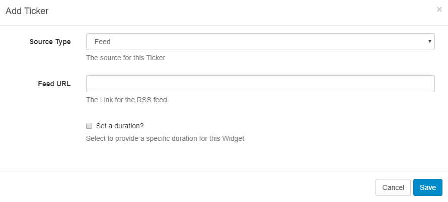
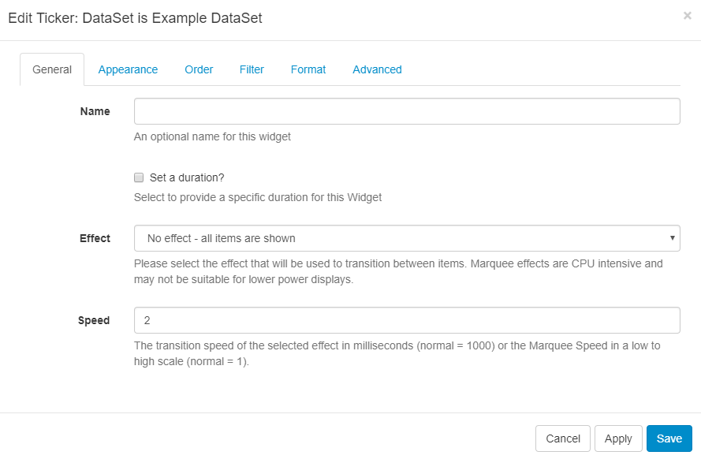
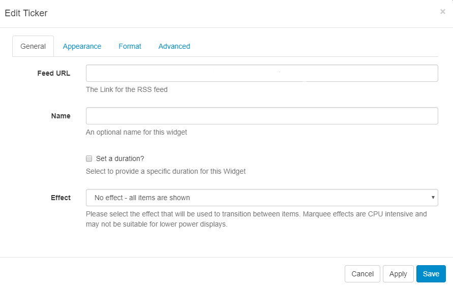

Ticker
If you are using v2 of the CMS, please use the following link: Dataset Ticker
The Ticker Widget allows dynamic Feed and DataSet content to be added to a Layout. The Ticker module primarily consists of a data source location and a template to apply to each data item retrieved from that data source.
For example, if the data source is an RSS Feed, the feed will have multiple items and the template will be applied to each of these items.
Tickers are specific to a Layout and not saved in the Library - this means that text items are not reusable and will need to be copied/pasted between Layouts if the same text is required on more than one.
Add Ticker
When adding a new Ticker the CMS provides a simple form asking for the Data Source and duration of the Ticker. These items cannot be changed without re-creating the Ticker.

Source Type - Use the drop-down menu to select whether the Ticker uses a Feed (RSS/Atom/XML) or a CMS DataSet as its Data Source.
- Feed as Source Type - Specify the Feed URL.
- DataSet as Source Type - Select the DataSet from the drop-down menu you wish to use.
Set a duration - tick to override the default duration.
Once saved the Edit Ticker form will open to provide further options.
Edit Ticker
Depending on the selected Source Type, options will be presented to configure:
- Ticker with a DataSet
- Ticker with an RSS Feed
Edit Ticker with a DataSet as selected Source

General
Name - give an optional name
Set a Duration - tick to optionally override the default duration
Effect - use the drop down to select an Effect to be used to transition between items.
Speed - Set the speed for the Effect selected.
Appearance
Use the Text Editor to format your Ticker. The available columns to use in the template can be found under Available Substitutions, double-click on the tags you wish to use to insert into the editing area.
Order
Order the DataSet results by using the clause builder or by using an advanced filter clause using SQL syntax, e.g. Name DESC
Filter
Filter the DataSet to exclude/include results by using the clause builder or by using an advanced filter cause using the SQL syntax.
Format
Select how many Items should appear on each page if an effect to split items has been selected and if they should show side by side.
Advanced
Background Colour - optionally select a background colour
Duration is per item - if selected, the configured Duration will be extended by the number of items returned by the Data Source.
This should be used with caution as it can create long-running Media items. It is recommended to use this setting in conjunction with a setting to limit the number of items shown.
Update Interval - Display clients can cache the content of this Media type to prevent repeated downloads and off-line playback. Keep this number as high as possible.
Lower Row Limit - lower row count (0 = unlimited)
Upper Row Limit - upper row count (0 = unlimited)
Edit Ticker with an RSS Feed as selected Source

General
Name - give an optional name
Set a Duration - tick to optionally override the default duration
Effect - use the drop down to select an Effect to be used to transition between items.
Appearance
Use the drop-down menu to select a template.
Select to override the template to show available keywords that can be used in the template. Double click to add to the text editor.
A special notation is available where the User can specify the Tag|Namespace within the feed for SFC Technology to extract content.
Format
Speed - set the transition speed for the selected Effect.
Text Direction - select the direction of the text.
Number of items - choose how many RSS items should be returned.
Items per page - use with a selected Effect to split items
Take items from - select to start with items from the beginning or end of the list.
Duration is per item - tick to configure the Duration to be extended by the number of items.
Use with caution as this can create long-running media items. Use in conjunction with ‘Number of items’ to limit this.
Randomise - random feeds work offline; the entire feed is parsed, rendered and downloaded to the Player and then sorted in a random fashion for display. We use a Durstenfeld shuffle to randomise the order of items. Randomise works on the full feed, "Number of items" and "Take items from" options.
Advanced
Background Colour - optionally select a background colour.
Update Interval - Display clients can cache the content of this Media type to prevent repeated downloads and off-line playback. Keep this number as high as possible.
Copyright - display a Copyright notice at the end of the feed.
Show item side by side - opt to display returned results side by side.
Data Format - apply a Date Format to apply to all returned date results.
Allowable Attributes - a comma-separated list of attributes that will not be stripped from the incoming feed.
Strip Tags - a comma-separated list of HTML tags to be stripped from the feed.
Disable Date Sort - disable the date sort for the feed.
Optional Style Sheet
This is applied to the entire Ticker media item when shown on Display Clients.
This is intended for advanced users to ‘tweak’ the CMS generated output.